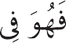
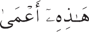
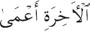

Orang yang memercayai Alquran dan Sunah sudah tidak asing lagi dengan konsep niki mat surga dan siksa neraka yang menanti di akhirat. Namun, ada hal penting yang sering mereka luputkan, yakni bahwa ada surga ruhani dan neraka ruhani. Mengenai surga ruhani, Allah berfirman kepada NabiiNya, “Tak pernah dilihat mata, tak pernah didem ngar telinga, dan tak pernah terlintas dalam hati manusia, itulah nikmat yang disiapkan bagi orang yang bertakwa.”
Hati orang yang tercerahkan memiliki satu jendela yang terbuka ke arah dunia rui hani sehingga ia dapat mengetahui—bukan dari kabar angin atau kepercayaan tradisio nal, melainkan teralami secara nyata—
penyebab segala kerusakan dan kebahagiaan jiwa, sejelas dan senyata pengetahuan se orang dokter mengenai segala penyebab rasa sakit atau pendukung kesehatan. Ia tahu bahwa pengetahuan tentang Allah dan iba dah kepadaiNya menjadi obat bagi jiwa, sei mentara kebodohan dan dosa menjadi racun yang merusaknya. Banyak orang, bahkan juga yang disebut ulama, karena bertaklid buta terhadap pendapat orang lain, tak pui nya keyakinan yang benar berkenaan dengan kebahagiaan atau penderitaan jiwa di akhirat. Tetapi orang yang mau mempelajari mai salah ini dengan pikiran yang bersih dari prasangka akan sampai pada keyakinan yang jelas mengenai masalah ini.
Kematian akan mengakibatkan keadaan yang berbeda pada dua jenis jiwa yang di miliki manusia, yaitu jiwa hewani dan jiwa ruhani. Jiwa ruhani bersifat malakut. Jiwa hewani bertempat dalam hati, yang dari sana menyebar laksana uap ke semua anggota tu buh, memberi tenaga atau kemampuan meli hat pada mata, mendengar pada telinga, dan ke seluruh anggota tubuh lainnya sehingga mereka dapat menjalankan fungsinya. Ini
bisa dibandingkan dengan sebuah lampu di sebuah pondok yang cahayanya menyebar ke dindingidinding. Hati adalah sumbu lam pu ini, dan jika aliran minyaknya terputus karena suatu sebab, lampu itu akan mati. Seperti itulah jiwa hewani mengalami kema tiannya.
Berbeda halnya dengan jiwa ruhani atau jiwa manusiawi. Jiwa ruhani tak terbagi dan dengan jiwa itulah manusia dapat mengenali Allah. Boleh dikatakan, ia adalah pengendai ra jiwa hewani. Dan ketika jiwa hewani musi nah, ia tetap ada. Keadaannya serupa dei ngan penunggang kuda yang telah turun atau pemburu yang tak lagi bersenjata. Kuda dan senjata itu adalah anugerah bagi jiwa manui sia agar ia bisa mengejar dan menangkap keabadian cinta dan pengetahuan tentang Allah. Jika berhasil, ia pasti akan merasa lega dan bahagia meski senjata atau tung gangannya meninggalkannya; ia tidak akan berkeluh kesah. Karena itu, Rasulullah saw. bersabda, “Kematian adalah hadiah Tuhan yang diharapiharapkan kaum beriman.” Te tapi ia akan celaka dan menderita jika kuda atau senjata itu telah hilang sedang ia belum
berhasil meraih tujuannya. Kesedihan dan penyesalannya sangat tak terperi.
Pembahasan yang lebih dalam akan me nunjukkan betapa berbedanya jiwa manusia dari jasad dan segenap anggotanya. Setiap anggota tubuh bisa rusak dan berhenti be kerja, tetapi kemandirian jiwa tak terusik. Selain itu, tubuh manusia mengalami peri kembangan dari waktu ke waktu. Tubuhnya di waktu bayi jauh berbeda dengan tubuhi nya di masa tua. Namun, kepribadian mai nusia tetap sama, dulu maupun sekarang. Jadi, bisa dikatakan bahwa jiwa akan terus ada menyertai sifatisifat esensialnya yang tak bergantung pada tubuh, seperti pengetahuan dan cinta kepada Allah. Inilah makna ayat Alquran, “segala yang baik akan abadi.” Layaknya pengetahuan, kebodohan pun akan abadi menyertai jiwa. Jadi, jika kau lebih memilih kebodohan ketimbang pengetahuan tentang Allah maka kebodohan itu akan mei nyertaimu di akhirat dalam wujud kegelapan jiwa dan penderitaan. Keadaan itulah yang dimaksudkan Alquran:
 

Orang yang buta di dunia ini akan buta di akhirat dan tersesat dari jam lan yang lurus.
Mengapa jiwa manusia cenderung untuk kembali ke dunia yang lebih tinggi? Sebab, ia berasal dari sana dan pada dasarnya ia bersifat malakut. Ia dikirim ke dunia yang lebih rendah ini berlawanan dengan keheni daknya untuk memperoleh pengetahuan dan pengalaman, sebagaimana firman Allah dai lam Alquran, “Turunlah dari sini kamu sem muanya, akan datang kepadamu perintahm perintah darimKu dan siapa yang menaatinya tidak perlu takut dan tak perlu gelisah.” Dan ayat Alquran: “Aku tiupkan ke dalam diri manusia ruhmKu” juga menunjukkan asal samawi jiwa manusia. Jiwa hewani akan tei tap sehat selama keseimbangan bagianibagii an yang menyusunnya terjaga. Jika keseimi bangan itu terusik, ia obatiobatan dapat
memulihkannya. Sama halnya, jiwa ruhani akan tetap sehat selama keseimbangan moi ralnya terjaga dengan menjalankan tuntunan etika dan ajaran moral.
Lalu, bagaimanakah keadaan jiwa mai nusia setelah kematian jasad? Sebagaimana telah disebutkan, jiwa manusia tak bergani tung pada jasad. Pandangan sebagian orang yang menentang keberadaan jiwa setelah kei matian didasarkan atas dugaan bahwa jiwa harus dibangkitkan setelah jasadnya menyai tu dengan tanah. Sebagian ahli kalam beri pendapat bahwa jiwa manusia musnah setei lah mati, kemudian dibangkitkan kembali. Pendapat ini bertentangan baik dengan nalar maupun Alquran. Sebagaimana telah kita bahas, kematian jasad sama sekali tidak mei mengaruhi apalagi menghancurkan jiwa, sei bagaimana dikatakan Alquran, “Jangan kamu pikir orang yang terbunuh di jalan Allah itu mati. Tidak! Mereka hidup, bahagia dengan kehadiran Tuhan mereka dan dalam limpahm an karunia.” Tak ada sedikit pun rujukan syariat yang menyebutkan bahwa ruh orang yang telah mati, yang baik maupun jahat, akan musnah. Malah, diriwayatkan bahwa
Nabi saw. pernah bertanya kepada ruh orangi orang kafir yang terbunuh mengenai kebei naran hukuman yang diancamkan kepada mereka. Ketika para sahabat menanyakan apa gunanya bertanya kepada mereka, Rasulullah menjawab, “Mereka bisa mendei ngar kataikataku lebih baik daripada kalii an.”
Diriwayatkan bahwa beberapa sufi melii hat surga dan neraka ketika mereka mencai pai keadaan ekstase. Ketika kembali sadar, wajah mereka menunjukkan apa yang telah mereka saksikan; sarat dengan tandaitanda kebahagiaan dan ketakutan yang sangat. Tetapi, visi atau penglihatan ke dunia gaib tak lagi dibutuhkan bagi orangiorang yang berpikir. Bagi orang yang selalu menyibuki kan dirinya memuaskan nafsu duniawi, saat kematian menghentikan seluruh perangkat indriawinya dan ketika segalanya musnah kecuali kepribadiannya, ia akan menderita karena harus berpisah dengan segala bentuk keduniaan yang begitu dekat dengannya sei lama ini, seperti istri, anak, kekayaan, tanah, budak, dan sebagainya. Sebaliknya, orang yang telah menghindari keduniaan dan mei
neguhkan cintanya kepada Allah, niscaya akan menyambut kematian sebagai pelepasi an dari kericuhan hidup duniawi untuk beri gabung dengan Dia yang dicintainya. Benari lah Rasulullah saw. ketika mengatakan, “Kei matian adalah jembatan yang menyatukan sahabat dengan sahabat.” Dan dalam hadis yang lain beliau bersabda, “Dunia ini surga bagi orang kafir, dan penjara bagi orang mukmin.”
Di lain pihak, semua derita yang ditangi gung jiwa setelah mati sesungguhnya disei babkan oleh cinta dunia yang berlebihan. Rasulullah bersabda bahwa setelah mati, sei mua orang kafir akan disiksa oleh 99 ular, yang masingimasing punya sembilan kepala. Orang yang berpikiran dangkal memaknai hadis itu secara harfiah; ia menggali kuburi an orang kafir dan mencari ular yang dii maksud namun tak juga ditemukan. Mereka sama sekali tidak memahami bahwa “ulari ular” itu selalu bersemayam dalam jiwa orang kafir, bahkan sudah menetap di sana saat mereka masih hidup. Ulariular itu menyimi bolkan sifatisifat jahat, seperti dengki, benci, munafik, sombong, licik, dan lainilain. Semua
sifat itu bersumber, langsung maupun tidak, dari cinta dunia. Itulah neraka yang disediai kan bagi orang yang, menurut Alquran, “mem neguhkan hati mereka pada dunia ini melem bihi akhirat”. Jika ulariular itu adalah ular biasa, mereka mungkin bisa melarikan diri dari siksanya meski hanya untuk sesaat. Tetapi ulariular itu merupakan penjelmaan dari sifat bawaan mereka sehingga bagaimai na bisa mereka melarikan diri darinya?
Ambillah contoh seseorang yang menjui al budak perempuannya tanpa menyadari pei rasaannya hingga budak itu telah lepas dari jangkauannya. Lalu, rasa cinta kepada bui dak itu yang selama ini tertidur dalam hatii nya, tibaitiba bangkit dengan intensitas yang luar biasa sehingga ia tersiksa dan menderita bagai disengat bisa ular. Ia menjadi gila kai renanya; ia rela mencampakkan dirinya ke dalam kobaran api atau menceburkan diri ke sungai untuk melarikan diri impitan pei rasaan itu. Seperti itulah akibat cinta dunia yang berlebihan. Para pecinta dunia tidak menyadarinya hingga dunia yang mereka cini tai itu direnggut dari mereka dan akhirnya, karena merasa sangat tersiksa, mereka lebih
dan dikembangkan oleh ibadah.
Ibadah dan zikir tak berkesudahan mencerminkan suatu tingkat keprihatinan dan pengekangan nafsu badani.
Ini tidak berarti ia harus memusnahkan nafsu badani sepenuhnya, karena jika begitu, ras manusia akan musnah.
Namun, pemuasan hasrat tubuh itu harus dibatasi dengan ketat.

memilih hidup sengsara ditemani ular dan kalajengking.
Dengan demikian, setiap pendosa akan disiksa di akhirat dengan alat penyiksaan yang mereka bawa sendiri dari dunia. Benari lah kata Alquran, “Sesungguhnya kalian akan melihat neraka. Kalian akan melihatnya dem ngan mata keyakinan (‘ayn aliyaqîn)”, dan “neraka mengitari orang kafir.” Alquran tii dak mengatakan “neraka akan mengitari mei reka”, karena bahkan di dunia pun neraka sudah mengitari mereka.
Mungkin ada yang keberatan dan mei nyatakan, “Kalau begitu, berarti tidak ada orang yang terbebas dari neraka, karena siai pa pun, sedikit atau banyak, pasti terikat pada dunia dengan beragam kepentingan dan kecenderungan?” Untuk menjawabnya bisa kita katakan bahwa ada orangiorang, terutama para fakir, yang telah sepenuhnya melepaskan diri dari cinta dunia. Bahkan, di antara orangiorang yang memiliki dan meni cintai dunia—termasuk istri, anak, rumah, dan lainilain—ada yang cintanya kepada Allah jauh lebih besar daripada cintanya kei pada yang lain. Mereka layaknya seseorang
yang, meski sudah punya rumah yang ia cini tai di sebuah kota, ketika raja memintanya untuk mengisi pos jabatan di kota lain, ia akan memenuhinya dengan senang hati, kai rena jabatan itu lebih berharga baginya dai ripada rumahnya. Termasuk dalam kategori ini adalah para nabi dan sebagian wali.
Di lain pihak, ada pula orang yang meni cintai Allah, tetapi cintanya kepada dunia jauh lebih besar sehingga mereka harus meni derita siksaan yang cukup berat setelah kei matian sebelum mereka dibebaskan darinya. Banyak orang yang mengaku mencintai Allah, tetapi kecintaannya sama sekali tak teruji. Untuk menguji rasa cintamu, perhatikanlah ke mana kau akan condong ketika perintahi perintah Allah datang bertolak belakang dei ngan hasrat keduniawianmu? Orang yang mengaku cinta kepada Allah namun tetap membangkang kepadaiNya, berarti pengi akuannya itu dusta belaka.
Telah kita jelaskan di atas bahwa salah satu bentuk neraka ruhani adalah terpisahi nya seseorang secara paksa dari dunia yang sangat dicintainya. Banyak orang yang tanpa sadar membawa dalam dirinya benihibenih
neraka. Mereka akan mengalami nasib yang teramat naas, layaknya seorang raja yang setelah menjalani hidup mewah, tibaitiba dii campakkan dari singgasananya dan menjadi cemoohan orangiorang.
Neraka ruhani jenis kedua adalah rasa malu, yaitu ketika seseorang dibangunkan untuk melihat hasil perbuatannya di dunia. Orang yang suka mengumpat di dunia akan mendapati dirinya dalam bentuk seorang kai nibal yang makan bangkai saudaranya. Orang yang iri hati akan tampak sebagai seseorang yang melemparkan batuibatu ke dinding, kei mudian batuibatu itu memantul kembali dan mengenai mata anaknya sendiri.
Neraka jenis ini, yaitu rasa malu, bisa dijelaskan dengan perumpamaan ringkas beri ikut ini. Seorang putra raja baru saja menii kah. Di malam harinya, ia pergi keluar beri sama beberapa sahabatnya dan kembali lagi ke istana dalam keadaan mabuk. Ia masuki sebuah kamar yang terang lalu berbaring di samping tubuh yang diduganya sebagai memi pelai wanitanya. Pagi harinya, saat kesadari annya pulih, ia terperanjat mendapati dirii nya terbaring di sebuah kamar mayat pei
nyembah api. Sofanya adalah pembaringan jenazah, dan tubuh yang diduganya mempei lai wanitanya adalah mayat wanita tua yang mulai membusuk. Betapa malu ia ketika kei luar kamar dan mendapati ayahnya, sang raja, mendekatinya dengan serombongan teni tara. Itulah perumpamaan tentang rasa malu yang akan dirasakan di akhirat oleh orangi orang serakah yang memasrahkan diri merei ka kepada segala sesuatu yang mereka angi gap sumber kebahagiaan.
Neraka ruhani jenis ketiga adalah kekei cewaan dan kegagalan mencapai objek eki sistensi yang sejati. Manusia diciptakan dei ngan tujuan untuk memantulkan cahaya pei ngetahuan tentang Tuhan. Namun, jika ia tiba di akhirat dengan jiwa yang tertutup karat tebal nafsu duniawi, ia akan gagal meni capai tujuan penciptaannya. Kekecewaannya bisa digambarkan dengan perumpamaan beri ikut. Misalkan seseorang melewati hutan gei lap bersama beberapa sahabat. Mereka mei lihat di sanaisini bertebaran batu berwarna yang kerlapikerlip memantulkan cahaya. Para sahabatnya mengumpulkan dan membawa batuibatu itu dan mengajaknya untuk melai
kukan hal yang sama. “Karena,” kata merei ka, “kami dengar batuibatu itu akan dibai yar dengan harga tinggi di tempat yang akan kita datangi.” Tetapi orang ini malah mei nertawakan mereka dan menyebut mereka bodoh karena menyimpan harapan siaisia untuk memperoleh sesuatu, sementara ia seni diri bisa berjalan bebas tak berbebani. Kei mudian mereka tiba di tempat yang dituju dan ternyata batuibatu itu adalah batu delii ma, zamrud, dan permata yang tak ternilai harganya. Betapa kecewa dan menyesal orang itu karena tidak mengumpulkan bendaibeni da yang sudah berada dalam jangkauannya itu. Seperti itulah penyesalan orang yang saat hidup di dunia ini tidak berusaha mendapati kan permata kebajikan dan perbendaharaan agama.
Perjalanan manusia di dunia ini bisa dii bagi ke dalam empat tahap, yaitu tahap ini driawi, eksperimental, instingtif, dan rasioi nal. Pada tahapan pertama ia seperti seekor ngengat yang, meski bisa melihat, tak bisa mengingat sehingga ia akan menubrukkan dirinya berkaliikali pada lilin yang sama. Pada tahapan kedua ia seperti seekor anjing yang,
setelah sekali dipukul, akan lari saat melihat sebatang rotan pemukul. Pada tahapan ketii ga ia seperti seekor kuda atau domba yang, secara instingtif, segera kabur saat melihat macan atau srigala—musuh alaminya—sei mentara mereka tak akan lari saat melihat unta atau kerbau, meski ukuran keduanya lebih besar. Pada tahapan keempat ia telah melampaui batasibatas kebinatangan itu sei hingga mampu, hingga batas tertentu, merai malkan dan mempersiapkan masa depannya. Pada tahapan pertama gerakannya seperti orang yang berjalan di atas tanah, lalu sei perti orang yang menyeberangi lautan di atas sebuah kapal, dan pada tahapan terakhir, ketika ia sudah akrab dengan hakikatihakii kat, ia seperti orang yang mampu berjalan di atas air. Dan, masih ada tahapan kelima yang hanya dikenal oleh para nabi dan wali. Gerakan mereka seperti orang yang terbang mengarungi udara.
Jadi, manusia bisa mengada pada berbai gai tahapan yang berbeda, mulai tahapan hewani sampai tahapan malakut. Dan persis di sinilah bahaya besar mengancam, yaitu kemungkinan jatuh ke tahapan yang paling
rendah. Alquran menyatakan, “Telah Kami tawarkan amanah kepada langit dan bumi serta gunungmgunung; mereka menolak mem nanggungnya. Tetapi manusia mau menangm gungnya. Sungguh manusia itu bodoh.” Hei wan maupun malaikat tak bisa mengubah tingkatan dan posisi kemakhlukannya. Tei tapi manusia bisa jatuh ke tingkatan hewan yang paling rendah atau naik meraih tingi katan malakut tertinggi. Inilah makna “pei nanggungan amanah” yang disebutkan dai lam ayat di atas. Kebanyakan manusia mei milih menetap di dua tahapan yang paling rendah. Dan biasanya mereka selalu memui suhi orangiorang yang bepergian atau musi afir yang jumlahnya jauh lebih sedikit.
Banyak manusia dari kedua kelompok itu, karena tak punya keyakinan yang teguh tentang akhirat, menolaknya sama sekali saat nafsu indriawi menguasainya. Menurut mei reka, neraka hanyalah temuan para teolog untuk menakutinakuti manusia. Mereka menghina dan merendahkan para teolog. Beri debat dengan orang seperti ini tak banyak berguna. Meski demikian, mungkin pertai nyaan ini bisa membungkam keangkuhani

yaitu melindungi dan memelihara jiwanya, serta merawat dan mengembangkan jasadnya. Jiwa akan terpelihara
dengan pengetahuan dan cinta kepada Allah. Sebaliknya, jiwa akan hancur jika seseorang terserap dalam kecintaan
kepada sesuatu selain Allah.

nya sehingga ia mau merenung sejenak: “Apai kah kau benaribenar yakin bahwa 124.000 nabi dan wali yang memercayai kehidupan akhirat itu semuanya salah, dan hanya kau yang benar?” Jika ia menjawab, “Ya, aku yakin,” berarti tak ada lagi yang dapat dii harapkan darinya. Hati dan pikiran mereka sudah membatu. Mereka sama sekali tak mei mercayai adanya hari akhir dengan pahala dan siksa yang disediakan bagi jiwaijiwa mai nusia. Jika seperti itu keadaannya, tinggali kan dan biarkanlah mereka dalam kesesati an, sebagaimana dikatakan Alquran, “Meski kau peringatkan, mereka takkan ingat.”
Tetapi jika ia menjawab bahwa kehii dupan akhirat itu mungkin ada mungkin tii dak ada, dan bahwa ajaran itu sarat misteri dan keraguan sehingga ia tak dapat memui tuskan benar atau tidaknya maka katakani lah kepadanya, “Tuntaskan keraguanmu itu!” Sampaikan beberapa perumpamaan beri ikut. Umpamanya kau hendak makan, lalu seseorang berkata bahwa seekor ular telah meludahkan bisa ke makanan itu, mungkin kau akan menahan diri dan memilih untuk menahan lapar daripada memakannya, mesi
ki orang yang mengabarkan informasi itu mungkin hanya bercanda atau berbohong. Atau misalnya kau sedang sakit dan seorang penyair berkata, “Beri aku satu dirham dan akan kutulis sebuah puisi untuk kauikatkan di lehermu agar kau sembuh dari sakit.” Mungkin kau akan memberinya uang dei ngan harapan jimatnya bisa menyembuhkan penyakitmu. Atau jika seorang peramal beri kata, “Jika bulan telah sampai pada suatu bentuk tertentu, minumlah obat ini dan itu, niscaya kamu akan sembuh.” Meski kau tak begitu percaya astrologi, mungkin kau akan mencobanya seraya berharap ramalannya itu benar. Lalu, tidak pernahkah kau berpikir bahwa mungkin saja ucapan para nabi, para wali, dan orangiorang suci, yang meyakini kan manusia mengenai adanya kehidupan mendatang, mengandung kebenaran seperti jimat si penyair atau ramalan si peramal? Banyak manusia yang berani menanggung risiko menyeberangi samudera demi mengi harap suatu keuntungan. Apakah kau bersii kukuh tidak mau menanggung sedikit peni deritaan di masa sekarang demi kebahagiaan abadi di akhirat?
Sayyidina Ali Zainal Abidin (Putra Husain ibn Ali ibn Abi Thalib, cucu Rasulullah saw.) ketika berdebat dengan seorang kafir pernah berkata, “Jika kau benar maka tidak sei orang pun di antara kita yang akan menangi gung penderitaan di masa depan. Tetapi jika kami yang benar maka kami akan selamat sementara kau pasti menderita.” Ia mengai takan itu bukan karena meragukan akhirat, melainkan untuk memberikan kesan tertentu kepada orang kafir itu.
Berdasarkan semua pembahasan di atas, dapat disimpulkan bahwa urusan utama mai nusia di dunia ini adalah mempersiapkan diri bagi dunia yang akan datang. Bahkan seani dainya seseorang meragukan keberadaan akhirat, nalar mengajarkan bahwa ia harus bertindak seakaniakan akhirat itu ada dei ngan mempertimbangkan akibat luar biasa yang mungkin terjadi. Keselamatan hanya bagi orangiorang yang mengikuti ajaran Allah.[]